화학분석기사 (2021-09-12 기출문제)
1과목: 화학분석 과정관리
1. 할로겐 원소의 특성을 설명한 것 중 틀린 것은?
- -1가 이온을 형성한다.
- 주로 이원자분자로 존재한다.
- 주기가 커질수록 반응성이 증가한다.
- 수소와 반응하여 할로겐화수소를 생성한다.
(정답률: 83%)

2. 유효숫자 계산이 정확한 것만 고른 것은?
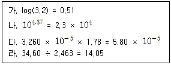
- 가, 나
- 다, 라
- 가, 다, 라
- 가, 나, 다, 라
(정답률: 56%)
3. C7H16의 구조 이성질체 개수는?
- 7개
- 8개
- 9개
- 10개
(정답률: 60%)
4. 분석방법에 대한 검증은 인증 표준물질(CRM)과 표준물질(RM) 또는 표준용액을 사용하여 검증한다. 다음 중 분석방법에 대한 검증항목이 아닌 것은?
- 정량한계
- 안전성
- 직선성
- 정밀도
(정답률: 68%)
5. 단색화 장치의 성능을 결정하는 요소로서 가장 거리가 먼 것은?
- 복사선의 순도
- 근접파장 분해능력
- 복사선의 산란효율
- 스펙트럼의 띠 너비
(정답률: 53%)
6. 자외선-가시광선 분광기의 구성 요소가 아닌 것은?
- 광원
- 검출기
- 지시전극
- 시료 용기
(정답률: 74%)
7. 폴리스타이렌(polystyrene)에 대한 설명으로 틀린 것은? (단, 폴리스타이렌 단량체의 분자량은 104 g/mol 이다.)
- 스타이렌이 1000개 연결되어 생성된 폴리스타이렌은 1.04×105 g/mol 의 분자량을 가진다.
- 폴리스타이렌의 단량체는 페닐기를 포함한다.
- 대표적인 열경화성 수지 가운데 하나이다.
- 폴리스타이렌 생성 반응은 개시(intiation), 생장(propagation), 종결(termination)의 세단계로 이루어진다.
(정답률: 66%)
8. H2(g) + I2(g) → 2HI(g) 반응의 평형상수(Kc)는 430℃에서 54.3 이다. 이 온도에서 1L 용기 안에 들어있는 각 화학종의 몰수를 측정하니 H2는 0.2mol, I2는 0.15mol 이라면, HI의 농도(M)는?
- 1.28
- 1.63
- 1.81
- 3.00
(정답률: 49%)
9. 다음 유기화합물을 옳게 명명한 것은?
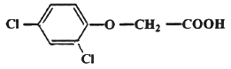
- 2,4-클로로페닐아세트산
- 1,3-디클로로벤젠아세트산
- 2,4-디클로로페녹시아세트산
- 1-옥시아세트산2,4-클로로벤젠
(정답률: 65%)
10. 일정한 온도와 압력에서 진행되는 아래의 연소반응에 관련된 내용 중 틀린 것은?
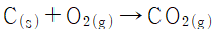
- 0.5mol의 탄소가 0.5mol의 산소와 반응하여 0.5mol의 이산화탄소를 만든다.
- 1g의 탄소가 1g의 산소와 반응하여 1g의 이산화탄소를 만든다.
- 이 반응에서 소비된 산소가 1mol이었다면, 생성된 이산화탄소의 몰수는 1mol이다.
- 이 반응에서 1L의 산소가 소비되었다면, 생성된 이산화탄소의 부피는 1L 이다.
(정답률: 84%)
11. 광도법 적정에서 εa = εt = 0 이고, εp ＞ 0 인 경우의 적정곡선을 가장 잘 나타낸 것은? (단, 각각의 기호의 의미는 아래의 표와 같으며, 흡광도는 증가된 부피에 대하여 보정되어 표시한다.)
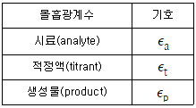
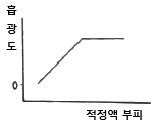
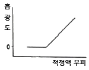
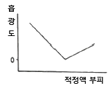
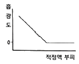
(정답률: 57%)
12. 원자와 관련된 용어에 대한 설명 중 틀린 것은?
- 이온화 에너지는 양이온 생성 시 원자가 흡수하는 에너지이다.
- 전기 음성도는 결합 시 원자가 전자를 끌어당기는 정도를 나타내는 값이다.
- 원자가 전자란 원자의 최외각에 배치하여 화학결합에 관여하는 전자이다.
- 전자 친화도는 음이온 생성 시 원자가 흡수하는 에너지이다.
(정답률: 55%)
13. 다음 중 질량이 가장 큰 것은?
- 산소 원자 0.01몰
- 탄소 원자 0.01몰
- 273K, 1atm에서 이상기체인 He 0.224L
- 이산화탄소 분자 0.01몰 내에 들어있는 총 산소 원자
(정답률: 72%)
14. 다음 중 원자의 크기가 가장 작은 것은?
- K
- Li
- Na
- Cs
(정답률: 82%)
15. 11.99g의 염산이 녹아있는 5.48M 염산 용액의 부피(mL)는? (단, Cl의 원자량은 35.45 g/mol 이다.)
- 12.5
- 17.8
- 30.4
- 60.0
(정답률: 71%)
16. 11.3g의 암모니아 속에 들어있는 수소원자의 몰수(mol)는?
- 0.5
- 1.0
- 1.5
- 2.0
(정답률: 68%)
17. 적외선 분광법의 시료용기 재료로 가장 부적합한 것은?
- AgBr
- CaF2
- KBr
- SiO2
(정답률: 53%)
18. 두 개의 탄화수소기가 산소원자에 결합된 형태를 가진 분자이며, 두 개의 알코올 분자로부터 한 분자의 물이 탈수되어 생성되는 분자의 종류는?
- 알데하이드(aldehyde)
- 카복시산(carboxylic acid)
- 에터(ether)
- 아민(amine)
(정답률: 67%)
19. 국가표준기본법령상 제품등이 국가표준, 국제표준 등을 충족하는지를 평가하는 교정, 인증, 시험, 검사 등을 의미하는 용어는?
- 표준인증심사유형
- 소급성평가
- 적합성평가
- 기술규정
(정답률: 61%)
20. 주기율표상에서 나트륨(Na)부터 염소(Cl)에 이르는 3주기 원소들의 경향성을 옳게 설명한 것은?
- Na로부터 Cl로 갈수록 전자 친화력은 약해진다.
- Na로부터 Cl로 갈수록 1차 이온화 에너지는 커진다.
- Na로부터 Cl로 갈수록 원자반경은 커진다.
- Na로부터 Cl로 갈수록 금속성이 증가한다.
(정답률: 69%)
2과목: 화학물질 특성분석
21. N의 산화수가 4+인 화합물은?
- HNO3
- NO2
- N2O
- NH4Cl
(정답률: 84%)
22. Pb2+와 EDTA의 형성 상수(formation constant)가 1.0×1018이고 pH 10에서 EDTA 중 Y4-의 분율이 0.3일 때, pH 10에서 조건(conditional) 형성 상수는? (단, 육양성자 형태의 EDTA를 H6Y2+로 표현할 때, Y4-는 EDTA에서 수소가 완전히 해리된 상태이다.)
- 3.0 × 1017
- 3.3 × 1013
- 3.0 × 10-19
- 3.3 × 10-18
(정답률: 46%)
23. 다음 중 Hg2(IO3)2(s)를 용해시킬 때, 용해된 Hg22+의 농도가 가장 큰 것은? (단, Hg2(IO3)2(s)의 용해도곱상수는 1.3×10-18 이다.)
- 증류수
- 0.10M KIO3
- 0.20M KNO3
- 0.30M NaIO3
(정답률: 62%)
24. 산과 염기에 대한 설명 중 틀린 것은?
- 산은 물에서 수소이온(H+)의 농도를 증가시키는 물질이다.
- 산과 염기가 반응하여 물과 염을 생성하는 반응을 중화반응이라고 한다.
- 염기성 용액에서는 H+ 의 농도보다 OH-의 농도가 더 크다.
- 산성용액은 붉은 리트머스 시험지를 푸르게 변색시킨다.
(정답률: 82%)
25. 활동도 계수의 특성에 대한 설명으로 가장 거리가 먼 것은?
- 농도가 높지 않은 용액에서 주어진 화학종의 활동도 계수는 전해질의 종류에 따라서만 달라진다.
- 용액이 무한히 묽어짐에 따라 주어진 화학종의 활동도 계수는 1로 수렴한다.
- 주어진 이온세기에서 같은 전하를 가진 이온들의 활동도 계수는 거의 같다.
- 전하를 띠지 않은 분자의 활동도 계수는 이온세기에 관계없이 대략 1 이다.
(정답률: 56%)
26. 0.1000M HCl 용액 25.00mL에 0.1000M NaOH 용액 25.10mL를 가했을 때의 pH는? (단, Kw는 10-14 이다.)
- 11.60
- 10.30
- 3.70
- 2.40
(정답률: 56%)
27. 0℃에서 액체 물의 밀도는 0.9998 g/mL 이고 이온화상수는 1.14×10-15 이다. 0℃에서 액체 물의 해리 백분율(mol%)은?
- 3.4×10-8
- 3.4×10-6
- 6.1×10-8
- 7.5×10-6
(정답률: 29%)
28. UV/Vis 흡수 분광법에 관한 설명 중 틀린 것은?
- 유기화합물의 UV-Vis 흡수는 n 또는 π 궤도에 있는 전자가 π*궤도로 전이하는 것에 기초로 두고 있다.
- n → π*전이에 해당하는 몰흡광계수는 비교적 작은 값을 갖는다.
- π → π*전이에 해당하는 몰흡광계수는 대부분 큰 값을 갖는다.
- 용매의 극성이 증가하면 n → π*전이에 해당하는 흡수 봉우리는 장파장 쪽으로 이동한다.
(정답률: 63%)
29. X선 분광법에서 파장을 분리하는 단색화 장치에 이용되는 분신요소는?
- 프리즘
- 결정
- 큐벳
- 광전관
(정답률: 36%)
30. 이온 세기와 이와 관련된 현상에 대한 설명 중 틀린 것은?
- 이온세기는 용액 중에 있는 이온의 전체 농도를 나타내는 척도이다.
- 염을 첨가하면, 이온 분위기가 형성되어 더 많은 고체가 녹는다.
- 염을 증가시키면 이온 간 인력이 순수한 물에서 보다 감소한다.
- 이온 세기가 클수록 이온 분위기의 전하는 작아진다.
(정답률: 43%)
31. 약산 용액을 강염기 용액으로 적정할 때 적절한 지시약과 적정이 끝난 후 용액의 색이 올바르게 연결된 것은?
- 메틸레드 - 빨강
- 페놀레드 - 노랑
- 메틸오렌지 - 노랑
- 페놀프탈레인 – 빨강
(정답률: 69%)
32. 다음의 전기화학 전지에 대한 설명으로 틀린 것은?
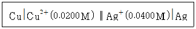
- 한줄 수직선(Ⅰ)은 전위가 발생하는 상 경계나 전위가 발생할 수 있는 접촉면이다.
- 이중 수직선(Ⅱ)은 염다리의 양 끝에 있는 두 개의 상 경계이다.
- 0.0400M은 은이온(Ag+)의 농도이다.
- 구리(Cu)는 환원전극이다.
(정답률: 72%)
33. 0.⑤0M 염화트리메틸암모늄((CH3)3NH+Cl) 용액의 pH는? (단, 염화트리메틸암모늄의 Ka는 1.59×10-10 이고, Kw는 1.0×10-14 이다.)
- 4.55
- 5.55
- 6.55
- 7.55
(정답률: 49%)
34. 황산구리(Ⅱ) 수용액으로부터 구리를 석출하기 위해 2A의 전류를 흘려주려고 한다. 1.36g의 구리를 석출하기 위해 필요한 시간(s)은? (단, 1F는 96500 C/mol이며, 구리의 원자량은 63.5 g/mol 이다.)
- 736
- 1033
- 2066
- 2567
(정답률: 47%)
35. 원자 분광법에서 이온의 형성을 억제하기 위한 방법으로 적절한 것은?
- 불꽃 온도를 내리고 압력을 올린다.
- 불꽃 온도를 올리고 압력도 올린다.
- 불꽃 온도를 내리고 압력도 내린다.
- 불꽃 온도를 올리고 압력을 내린다.
(정답률: 42%)
36. Ag 및 Cd와 관련된 반쪽 반응식과 표준 환원 전위가 아래와 같을 때, 25℃에서 다음 전지의 전위(V)는?
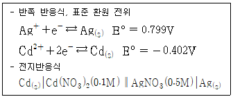
- -0.461
- 0.320
- 0.781
- 1.213
(정답률: 64%)
37. 철근이 녹슬 때 질량 변화는?
- 녹슬기 전과 질량 변화가 없다.
- 녹슬기 전에 비해 질량이 증가한다.
- 녹슬기 전에 비해 질량이 감소한다.
- 녹이 슬면서 일정 시간 질량이 감소하다가 일정하게 된다.
(정답률: 71%)
38. 온도가 증가할 때, 아래 두 반응의 평형상수 변화는?
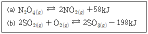
- (a), (b) 모두 증가
- (a), (b) 모두 감소
- (a) 증가, (b) 감소
- (a) 감소, (b) 증가
(정답률: 52%)
39. 산-염기 적정에서 사용하는 지시약의 반응과 지시약의 형태에 따른 색상이 아래와 같다. 중성인 용액에 지시약과 산을 첨가하였을 때 혼합용액의 색깔은?
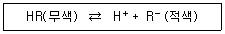
- 적색
- 무색
- 알 수 없다.
- 적색과 무색이 번갈아 나타난다.
(정답률: 66%)
40. 높은 몰흡광계수를 갖는 시료를 분석할 때, 다음 중 Beer's law가 가장 잘 적용될 수 있는 경우는?
- 분석물의 농도범위가 10-4 ~ 10-3M 일 때
- 분석물의 농도범위가 10-3 ~ 10-2M 일 때
- 분석물의 농도범위가 10-2 ~ 10-1M 일 때
- 분석물의 농도범위가 10-1 ~ 100M 일 때
(정답률: 55%)
3과목: 화학물질 구조분석
41. 온도 변화에 따른 시료의 무게 감량을 측정하는 분석법은?
- FT-IR
- TGA
- GPC
- GC/MS
(정답률: 81%)
42. 전압-전류법의 전압-전류 곡선으로부터 얻을 수 있는 정보가 아닌 것은?
- 용액의 밀도
- 정량 및 정성 분석
- 전극 반응의 가역성
- 금속 착물의 안정도 상수 및 배위수
(정답률: 51%)
43. 원자 질량 분석법(Atomic Mass Spectrometry)의 이온화 방법으로 틀린 것은?
- 스파크(spark)
- 글로우 방전(glow discharge)
- 장 이온화 방출침(field inoization emitter)
- 유도 결합 플라스마(inductively coupled plasma)
(정답률: 40%)
44. Gas Chromatography(GC)에서 사용되는 검출기와 선택적인 화합물의 연결이 잘못된 것은?
- FID – 무기 계통 기체 화합물
- NPD – 질소(N), 인(P) 포함 화합물
- ECD – 전자 포획 인자 포함 화합물
- TCD – 운반 기체와 열전도도 차이가 있는 화합물
(정답률: 61%)
45. 핵 자기 공명(Nuclear Magnetic Resonance, NMR) 분광법에서 사용 가능한 내부 표준물로 가장 적절한 것은?
- CH3CN
- (CH3)4Si
- C9H7NO
- [-C2HC6H5-]n
(정답률: 62%)
46. 열무게 분석법(TGA)의 주된 응용(연구)으로 거리가 먼 것은?
- 수화물의 결정수 결정 연구
- 중합체의 분해 메커니즘 연구
- 중합체 분해반응의 속도론적 연구
- 기화, 승화, 탈착과 같은 물리적 변화 연구
(정답률: 48%)
47. 핵 자기 공명(Nuclear Magnetic Resonance, NMR) 분광법에 대한 설명으로 틀린 것은?
- 시료를 센 자기장에 놓아야 한다.
- 화학종의 구조를 밝히는데 주로 사용된다.
- 흡수과정에서 원자의 핵이 관여하지 않는다.
- 4~900 MHz 정도의 라디오 주파수 영역의 전자기 복사선의 흡수를 측정한다.
(정답률: 74%)
48. 전해질(0.1M KNO3)만 있는 용액에서 적하 수은 전극(D.M.E.)에 –0.8V를 적용하고 측정한 잔류 전류(residual current)는 0.2μA 이다. 같은 전해질 용액 100mL에 포함된 Cd2+ 환원에 대한 한계 전류(liniting current)는 8.0μA 이다. 만약 1.00×10-2M Cd2+ 표준용액 5mL를 이 용액에 가한 후 –0.8V에서 측정한 한계 전류가 11.0μA라면, 이 용액에 포함된 Cd2+의 농도(mM)는? (단, 측정 간 온도변화는 없다고 가정한다.)
- 0.355
- 0.494
- 0.852
- 1.10
(정답률: 22%)
49. 전기량법에 관한 설명 중 옳은 것은?
- 전기량의 단위로 F(Faraday)가 사용되는데 1F는 96485 C/mole e-로 되는데 1C는 1V×1A 이다.
- 전기량법 적정은 전해전지를 구성한 분석용액에 뷰렛으로부터 표준용액을 가하면서 전류의 변화를 읽어서 종말점을 구한다.
- 조절-전위 전기량법을 위한 전지는 기준전극(reference electrode), 상대전극(counter electrode), 및 작업전극(working electrode)으로 구성되는데 기준전극과 상대전극 사이의 전위를 조정한다.
- 구리의 전기분해 전지에서 전위를 일정하게 놓고 전기분해를 하면 시간에 따라 전류가 감소하는데 이는 구리 이온의 농도가 감소하고 환원전극 농도 편극의 증가가 일어나기 때문이다.
(정답률: 46%)
50. 적외선 흡수 스펙트럼을 나타낼 때 가로축으로 주로 파수(cm-1)를 쓰고 있다. 파장(μm)과의 관계는?
- 파수 × 파장 = 100
- 파수 × 파장 = 1000
- 파수 = 10000/파장
- 파수 = 1000000/파장
(정답률: 68%)
51. FT-IR에서 789cm-1와 791cm-1의 흡수 밴드를 구별하기 위해 거울이 움직여야 하는 거리(cm)는?(문제 오류로 가답안 발표시 1번으로 발표되었지만 확정답안 발표시 모두 정답처리 되었습니다. 여기서는 가답안인 1번을 누르면 정답 처리 됩니다.)
- 0.5
- 1.0
- 5.0
- 10.0
(정답률: 70%)
52. 분자 질량 분석법의 이온화 방법 중 사용하기 편리하고 이온 전류를 발생시키므로 매우 예민한 방법이지만, 열적으로 불안정하고 분자량이 큰 바이오 물질들의 이온화원에는 부적당한 방법은?
- Electron Ionization(EI)
- Electro Spray Ionization(ESI)
- Fast Atom Bombardment(FAB)
- Matrix-Assisted Laser Desorption Ionization(MALDI)
(정답률: 64%)
53. HPLC에서 역상(reversed-phase) 크로마토그래피 시스템을 가장 잘 설명한 것은?
- 정지상이 극성이고 이동상이 비극성인 시스템
- 이동상이 극성이고 정지상이 비극성인 시스템
- 분석 물질이 극성이고 정지상이 비극성인 시스템
- 정지상이 극성이고 분석 물질이 비극성인 시스템
(정답률: 62%)
54. Gas Chromatography(GC)의 이상적인 검출기의 특징으로 틀린 것은?
- 안정성과 재현성이 좋아야 한다.
- 신뢰도가 높고 사용하기 편리해야 한다.
- 검출기의 감도는 10-8 ~ 10-15g 용질/s 일 때 이상적이다.
- 흐름 속도와 무관하게 긴 응답 시간을 가져야 한다.
(정답률: 79%)
55. 시료와 기준 물질의 온도를 프로그램 하여 변화시킬 때, 두 물질 간의 온도차(△T)를 측정하여 분석하는 열분석법은?
- Thermal Gravimetric Analysis(TGA)
- Differential Thermal Analysis(DTA)
- Differential Scanning Calorimetry(DSC)
- Isothermal DSC
(정답률: 65%)
56. 질량 분석법으로 얻을 수 있는 정보가 아닌 것은?
- 분자량에 관한 정보
- 동위원소에 존재비에 관한 정보
- 복잡한 분자의 구조에 관한 정보
- 액체나 고체 시료의 반응성에 관한 정보
(정답률: 59%)
57. 컬럼의 길이가 30cm인 크로마토그래피를 사용하여 혼합물 시료로부터 성분 A를 분리하였다. 분리된 성분 A의 머무름 시간은 12분이었으며, 분리된 봉우리 밑변의 너비가 2.4분이었다면 이 컬럼의 단높이(cm)는?
- 7.5×10-2
- 14×10-2
- 2.5
- 12.5
(정답률: 49%)
58. 시차 주사 열계량법(Differential Scanning Calorimetry; DSC)에 대한 설명으로 틀린 것은?
- 시료 물질과 기준 물질을 조절된 온도 프로그램에서 가열하면서 두 물질의 온도 차이를 온도의 함수로서 측정한다.
- 전력보상 DSC와 열흐름 DSC에서 제공하는 정보는 같으나 기기장치는 근본적으로 다르다.
- 폴리에틸렌의 DSC 자료에서 발열 피크의 면적은 결정화 정도를 측정하는데 이용된다.
- DSC 단독 사용 시 물질종의 확인은 어려우나, 물질의 순도는 확인할 수 있다.
(정답률: 56%)
59. ICP-MS의 작동 순서와 설명으로 틀린 것은?
- ICP를 켜기 전 냉각수 및 진공 상태를 확인한다.
- 플라스마를 켠 다음, 플라스마 작동조건을 최적화 시킨다.
- 시료 도입 전에 바탕 용액으로 잠깐 동안 시료 도입 장치의 조건을 맞춘다.
- 실험이 끝나면 플라스마를 끄고, 약산으로 시료 도입 장치를 세척한다.
(정답률: 62%)
60. 유리 지시 전극을 사용하여 용액의 pH를 측정할 때에 대한 설명으로 가장 적절하지 않은 것은?
- 선택 계수(kH.B)는 1이어야 한다.
- 1개의 기준 전극이 포함되어 있다.
- 높은 pH에서는 알칼리 오차가 생길 수 있다.
- 내부 용액의 수소 이온농도를 정확히 알고 있어야 한다.
(정답률: 39%)
4과목: 시험법 밸리데이션
61. 원료의약품의 정량 시험을 밸리데이션하는 과정에서 얻은 결과 중 틀린 것은? (단, 허용기준은 R≥0.990이다.)
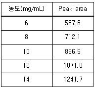
- 기울기 : 88.395
- y절편 : -5.99
- Linearity시험 : 만족
- 농도 Level : 60~140%
(정답률: 63%)
62. 검량선 작성에 관한 내용 중 틀린 것을 모두 고른 것은?
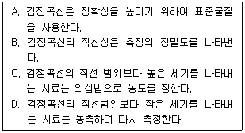
- A, B
- B, C
- C, D
- A, D
(정답률: 36%)
63. 정밀성에 대한 설명이 아닌 것은?
- 동일 실험실내에서 동일한 시험자가 동일한 장치와 기구, 동일제조번호와 시약, 기타 동일 조작 조건하에서 균일한 검체로부터 얻은 복수의 검체를 짧은 기간차로 반복분석 실험하여 얻은 측정값들 사이의 근접성을 검토해야 한다.
- 동일한 실험실내에서 다른 실험일, 다른 시험자, 다른 기구 또는 장비 등을 이용하여 분석 실험하여 얻은 측정값들 사이의 근접성을 검토해야 한다.
- 일반적으로 표준화된 시험방법을 사용하여 서로 다른 실험실에서 하나의 동일한 검체로부터 얻은 측정값들 사이의 근접성을 검토해야 한다.
- 분석대상물질의 양에 비례하여 일정 범위 내에 직선적인 측정값을 얻어낼 수 있는 능력을 검토해야 한다.
(정답률: 47%)
64. 광화학반응용기 및 전기영동법의 모세관 칼럼의 재질로 가장 많이 사용되는 물질은?
- 붕소규산염 유리
- 석영 유리
- 자기 유리
- 소다석회 유리
(정답률: 69%)
65. 시험법 밸리데이션 계획서의 구성이 아래와 같을 때, 계획서에 대한 설명 중 틀린 것은?
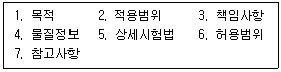
- 시험에 사용되는 장비, 물질, 시험조건 등을 상세히 기술한다.
- 시험법 밸리데이션의 항목은 시험의 목적에 맞게 선택할 수 있다.
- 허용범위는 시험 결과에 따라 달라질 수 있다.
- 시험 용액의 제조 등과 같이 시험법과 관련된 내역을 상세히 기술한다.
(정답률: 66%)
66. Volumetric Karl Fischer를 사용하여 실험한 결과가 아래와 같을 때, 실험 결과의 해석 및 일반적인 장비관리절차를 기준으로 적절하지 않은 의견을 제시한 사람은?
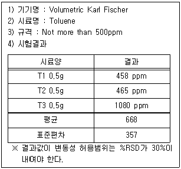
- 이대리 : %RSD가 이상있으니 전극의 상태를 먼저 점검해볼 필요가 있어 보입니다.
- 류과장 : 그럼 교체주기와 사용이력 등을 먼저 확인해 보도록 합시다.
- 김부장 : 장비에 문제가 발생하였다고 보여지면 외부의 업체에 의뢰하여 Calibration을 실시하는 것도 좋겠어요.
- 권사원 : 외부에 의뢰할 예정이니 장비 유지보수 기록서는 별도로 기입하지 않겠습니다.
(정답률: 73%)
67. 아래 측정값의 평균(A), 표준편차(B), 분산(C), 변동계수(D), 범위(E)는?
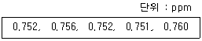
- A : 0.754, B : 0.004, C : 1.4×10-5, D : 0.5%, E : 0.009
- A : 0.754, B : 0.003, C : 1.4×10-5, D : 0.1%, E : 0.09
- A : 0.754, B : 0.004, C : 1.4×10-6, D : 0.5%, E : 0.09
- A : 0.754, B : 0.003, C : 1.4×10-6, D : 0.1%, E : 0.009
(정답률: 56%)
68. 평균값이 ±4% 이내일 때, 95%의 신뢰도를 얻기 위한 2.8g 시료의 분석 횟수는? (단, 분석 불정확도는 시료 채취 불정확도보다 매우 작아 무시할 만하며, 주어진 조건에서 시료채취상수는 41g 이다.)
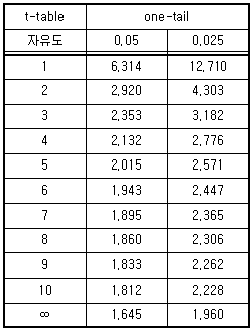
- 2
- 4
- 6
- 8
(정답률: 40%)
69. 시험분석기관의 부서를 사업 총괄부서와 시험장비 운용부서로 나눌 때, 사업총괄부서의 시험장비 밸리데이션 관련 임무와 거리가 먼 것은?
- 사업 자문관 등을 지정한다.
- 시험장비의 변경 내용을 통보한다.
- 소관기관 시험장비에 대한 밸리데이션 사업 시행에 필요한 예산을 확보한다.
- 표준수행절차 및 표준 서식 등을 정하고 필요·요구에 맞게 수정·보완한다.
(정답률: 53%)
70. 다음은 검출 한계를 특정하는 여러 방법 중 한 가지이다. ( )에 들어갈 내용을 바르게 연결된 것은?
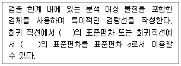
- 잔차 - y절편
- 기울기 - y절편
- 상관계수 - 잔차
- 기울기 – 상관계수
(정답률: 40%)
71. Na+을 포함하는 미지시료를 AES를 이용해 측정한 결과 4.00mV이고, 미지시료 95.0mL에 2.00M NaCl 표준용액 5.00mL를 첨가한 후 측정하였더니, 8.00mV였을 때, 미지시료 중에 함유된 Na+의 농도(M)는?
- 0.95
- 0.095
- 0.0095
- 0.00095
(정답률: 35%)
72. 분석의 전처리 과정에서 발생 가능한 오차에 대한 설명 중 적합하지 않은 것은?
- 측정에서 오차는 측정 조건에 따라 그 크기가 달라지지만 아무리 노력하더라도 오차를 완전히 없앨 수 없다.
- 우연 오차는 동일한 시험을 연속적으로 실시하여 보정이 가능하다.
- 우연 오차에서는 평균값보다 큰 측정값이 얻어질 확률과 작은 값이 얻어질 확률이 같다.
- 계통 오차의 발생 예는 교정되지 않은 뷰렛을 사용하여 부피를 측정하였을 때를 들 수 있다.
(정답률: 53%)
73. 분석을 시작하기 전 매트릭스가 혼재되어 있을 때 보조적인 시험방법을 추가로 고려해야 하는지의 여부를 결정짓는 특성은?
- 정확성
- 견뢰성
- 완건성
- 특이성
(정답률: 48%)
74. 분석장비를 이용한 실험 준비 과정에 대한 설명 중 옳은 것을 모두 고른 것은?
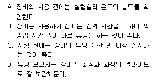
- A, B, C
- A, C, D
- B, C, D
- A, B, C, D
(정답률: 73%)
75. 시험법 밸리데이션 과정에 일반적으로 요구되는 방법 검증 항목을 모두 고른 것은?
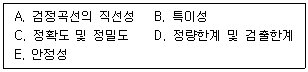
- A, B, C, D, E
- A, C, D, E
- A, B, C, D
- A, B, C
(정답률: 57%)
76. 시험법 밸리데이션 항목 중 직선성 평가에 대한 설명으로 옳지 않은 것은?
- 적어도 5개 농도의 검체를 사용하는 것이 권장된다.
- 최소자승법에 의한 회귀 직선의 계산과 같은 통계학적 방법을 이용해 측정 결과를 평가한다.
- 농도 또는 함량에 대한 함수로 그래프를 작성하여 시각적으로 직선성을 평가한다.
- 만약 시험결과가 허용범위에 만족하지 못하는 경우 해당 시험법은 밸리데이션 될 수 없다.
(정답률: 48%)
77. 시험, 교정 또는 샘플링 성적서에 관한 KS의 일부분이 아래와 같을 때, 밑줄 친 것에 해당하지 않는 것은?
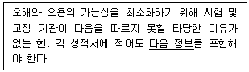
- 성적서 의뢰 일자
- 사용한 방법의 식별
- 시험 기관의 명칭 및 주소
- 시험 기관 활동의 수행 일자
(정답률: 49%)
78. GC-MS를 이용한 VOCs 실험에서 밸리데이션 실험 요소에 따른 평가기준 설정으로 적절하지 않은 것은? (단, 공정시험법을 기준으로 한다.)
- 정량한계 근처의 농도가 되도록 분석물질을 첨가한 시료 7개를 준비하여 각 시료를 공정시험법 분석절차와 동일하게 추출하여 표준편차를 구한 후 표준편차의 3.14를 곱한 값을 방법검출한계로, 10을 곱한 값을 정량한계로 나타낸다.
- 검정곡선의 작성 및 검증은 정량범위 내의 3개 이상의 농도에 대해 검정곡선을 작성하고, 얻어진 검정곡선의 결정계수(R2)가 0.98 이상이어야 한다.
- 검정곡선의 작성 및 검증은 정량범위 내의 3개 이상의 농도에 대해 검정곡선을 작성하고, 얻어진 검정곡선의 상대표준편차가 25% 이내이어야 한다.
- 정확도 기준은 정제수에 정량한계 농도의 2배~10배가 되도록 표준물질을 첨가한 시료를 3개 이상 준비하여 공정시험법 분석절차와 동일하게 측정한 측정 평균값의 상대 백분율이 50%~150% 이내이어야 한다.
(정답률: 46%)
79. 시험법 밸리데이션에 관한 설명 중 일반적인 수행방법으로 가장 거리가 먼 것은?
- 시험법 밸리데이션의 목적은 시험방법이 목적에 적합함을 증명하는 것이다.
- 밸리데이션을 수행할 때는 순도가 명시된 특성 분석이 완료된 표준물질을 사용해야 한다.
- 밸리데이션 시에 확보한 모든 관련 자료와 항목에 적용한 산출공식을 제출하고 적절하게 설명해야 한다.
- 밸리데이션된 시험방법의 변경사항에 대한 기록은 생략 가능하다.
(정답률: 75%)
80. 분석 시료의 균질성을 확보하기 위한 방법으로 가장 거리가 먼 것은?
- 정제(알약)의 경우 무게와 크기가 표준품 규격에 일치하는 1정을 선별하여 분석시료를 제조한다.
- 액제(물약)의 경우 시료 채취 전 충분히 교반 후 상·중·하층으로 나누어 채취 후 혼합하여 분석 시료를 제조한다.
- 휘발성 물질의 경우 채취 중 외부와의 접촉을 최소화하며 분석 시료 보관 용기를 가득 채운다.
- 지하수의 경우 물을 충분히 퍼낸 다음 새로 나온 물을 채취한다.
(정답률: 51%)
5과목: 환경·안전관리
81. 아연과 황산을 반응시키는 아래의 반응으로 생성되는 수소를 수상포집한다. 반응 종료 후 포집병 내부의 부피는 125mL, 전체압력은 838torr, 온도는 60℃일 때, 수소의 몰분율과 반응에 소모된 아연의 양(g)은? (단, 포집병 내부에는 수증기와 수소만 있다고 가정하며, 60℃의 수증기압은 150torr이고, 아연의 원자량은 65.37 g/mol 이다.)
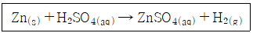
- 0.821, 0.270g
- 0.241, 0.821g
- 0.821, 0.121g
- 0.241, 0.721g
(정답률: 37%)
82. 과학기술정보통신부의 연구실 설치·운영 가이드라인상 산화제와 같이 보관해서는 안되는 화학물질은?
- 알칼리
- 무기 산
- 유기 산
- 산화성 산
(정답률: 51%)
83. 폐기물관리법령상 폐기물분석전문기관이 아닌 것은? (단, 그 밖에 환경부장관이 폐기물 시험·분석 능력이 있다고 인정하는 기관은 제외한다.)
- 한국환경공단
- 보건환경연구원
- 산업안전보건공단
- 수도권매립지관리공사
(정답률: 54%)
84. 실험실에서의 시약 사용 시 주의사항, 폐기물 처리 및 보관 수칙 중 틀린 것은?
- 시약은 필요한 만큼만 시약병에서 덜어내어 사용하고, 남은 시약은 재사용하지 않고 폐기한다.
- 폐시약을 수집할 때는 성분별로 구분하여 보관 용기에 보관하며, 남은 폐시약은 물로 씻고 하수구에 폐기한다.
- 폐시약 보관 용기는 통풍이 잘 되는 곳을 별도로 지정하여 보관한다.
- 폐시약 보관 용기는 저장량을 주기적으로 확인하고 폐수 처리장에 처리한다.
(정답률: 75%)
85. 완전연소할 때 자극성이 강하고 유독한 기체를 발생하는 물질은?
- 벤젠
- 에틸알코올
- 메틸알코올
- 이황화탄소
(정답률: 70%)
86. 화학물질 취급 종사자가 200ppm의 아세톤에 3시간, 100ppm의 n-헥세인에 2시간 동안 노출되었을 때, 이 근로자의 8시간 기준 시간가중평균노출기준(TWA; ppm)은?
- 100
- 200
- 300
- 400
(정답률: 63%)
87. 화재발생 후 화재의 진행단계에 따른 실험실 종사자의 적절한 대응으로 이루어진 것은?
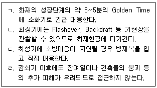
- ㄱ, ㄴ
- ㄴ, ㄷ
- ㄷ, ㄹ
- ㄱ, ㄹ
(정답률: 77%)
88. 위험물안전관리법령상 질산에스테르류, 니트로화합물, 유기과산화물이 속하는 위험물 성질은?
- 자기반응성 물질
- 인화성 액체
- 자연발화성 물질
- 산화성 액체
(정답률: 56%)
89. 산업안전보건법령상 자기반응성 물질 및 혼합물의 구분 형식 A~G 중 형식 A에 해당되는 것은?
- 포장된 상태에서 폭굉하거나 급속히 폭연하는 자기반응성 물질 또는 화합물
- 50kg 포장물의 자기가속분해온도가 75℃보다 높은 물질 또는 혼합물
- 분해열이 300 J/g 미만인 물질 또는 혼합물
- 폭발성 물질 또는 화약류 물질 또는 혼합물
(정답률: 57%)
90. GHS에 의한 화학물질의 분류에 있어 성상에 대한 설명으로 옳지 않은 것은?
- 가스는 50℃에서 증기압이 300kPaAbs를 초과하는 단일 물질 또는 혼합물
- 고체는 액체 또는 가스의 정의에 부합되지 않는 단일 물질 또는 혼합물
- 증기는 액체 또는 고체 상태로부터 방출되는 가스 형태의 단일 물질 또는 혼합물
- 액체는 101.3 kPa에서 녹는점이나 초기 녹는점이 25℃ 이하인 단일 물질 또는 혼합물
(정답률: 44%)
91. 산업안전보건법령상 물질안전보건자료의 경고표시 기재항목의 작성방법으로 틀린 것은?
- 그림문자 : 5개 이상일 경우 4개만 표시 가능
- 신호어 : “위험” 또는 “경고” 표시 모두 해당하는 경우에는 “경고”만 표시가능
- 예방조치 문구 : 7개 이상인 경우에는 예방·대응·저장·폐끼 각 1개 이상을 포함하여 6개만 표시 가능
- 유해·위험 문구 : 해당 문구는 모두 기재하되, 중복되는 문구는 생략, 유사한 문구는 조합 가능
(정답률: 73%)
92. C2H4를 합성하기 위한 반응은 아래와 같으며, C2H4의 수득률이 42.5%라면 C2H4 281g을 생산하기 위해 필요한 C6H14의 질량(g)은?
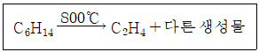
- 2.03 × 103
- 3.03 × 103
- 4.03 × 103
- 5.03 × 103
(정답률: 47%)
93. 브뢴스테드에 의한 산/염기의 정의에 따라 아래 반응을 바르게 설명하지 못한 것은?
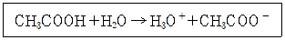
- 정반응에서 아세트산은 양성자를 잃으므로 산에 속한다.
- 정반응에서 물은 양성자를 받아들임으로 염기에 속한다.
- 역반응에서 하이드로늄 이온은 양성자를 잃으므로 산에 속한다.
- 역반응에서 아세트산 이온은 양성자를 받아들임으로 산에 속한다.
(정답률: 73%)
94. 화학 실험실 실험기구 및 장치의 안전 사용에 대한 설명으로 가장 거리가 먼 것은?
- 모든 플라스크류는 감압조작에 사용할 수 있다.
- 비커류에 용매를 넣을 때 크리프현상을 주의하여야 한다.
- 실험 장치는 온도 변화에 따라 기계적 강도가 변할 수 있다.
- 실험 장치는 사용하는 약품에 따라 기계적 강도가 변할 수 있다.
(정답률: 67%)
95. 비점이 다른 성분의 혼합물인 원유나 중질유 등의 유류저장탱크에 화재가 발생하여 장시간 진행되어 형성된 열류층이 탱크 저부로 내려오며 탱크 밖으로 비산, 분출되는 현상은?
- BLEVE
- Boil-over
- Flash-over
- Backdraft
(정답률: 60%)
96. 위험물안전관리법령상 화학분석실에서 발생하는 위험 화학물질의 운반에 관한 설명으로 틀린 것은?
- 위험물은 온도변화 등에 의하여 누설되지 않도록 하여 밀봉 수납한다.
- 하나의 외장 용기에는 다른 종류의 위험물을 같이 수납하지 않는다.
- 액체위험물은 운반용기 내용적의 98% 이하로 수납하되 55℃의 온도에서도 누설되지 않도록 충분한 공간용적을 유지해야 한다.
- 고체위험물은 운반용기 내용적의 98% 이하로 수납해야 한다.
(정답률: 56%)
97. 위험물안전관리법령상 ( )에 해당하는 용어는?
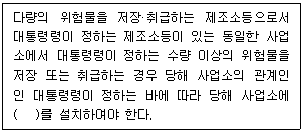
- 의용소방대
- 자위소방대
- 자체소방대
- 사설소방대
(정답률: 68%)
98. 완충용액에 대한 설명으로 틀린 것은?
- 완충용액이란 외부에서 어느 정도의 산이나 염기를 가했을 때, 영향을 크게 받지 않고 수소이온 농도를 일정하게 유지하는 용액이다.
- 약염기에 그 염을 혼합시킨 완충용액은 강염기를 소량 첨가하면 pH의 변화가 크다.
- 약산에 그 염을 혼합시킨 완충용액은 강산을 소량 첨가해도 pH의 변화가 그다지 없다.
- 완충용액은 피검액의 안정제나 pH 측정의 비교 표준액으로 사용된다.
(정답률: 65%)
99. 위험물안전관리법령상 인화성고체로 분류하는 1기압에서의 인화점 기준은?
- 20℃ 미만
- 30℃ 미만
- 40℃ 미만
- 60℃ 미만
(정답률: 53%)
100. 소방시설법령상 특급 소방안전관리대상물의 소방안전관리자로 선임할 수 있는 자격기준으로 옳지 않은 것은?
- 소방기술사 또는 소방시설관리사의 자격이 있는 사람
- 소방설비기사의 자격을 취득한 후 5년 이상 1급 소방안전관리대상물의 소방안전관리자로 근무한 실무경력이 있는 사람
- 소방설비산업기사의 자격을 취득한 후 6년 이상 1급 소방안전관리대상물의 소방안전관리자로 근무한 실무경력이 있는 사람
- 소방공무원으로 20년 이상 근무한 경력이 있는 사람
(정답률: 52%)